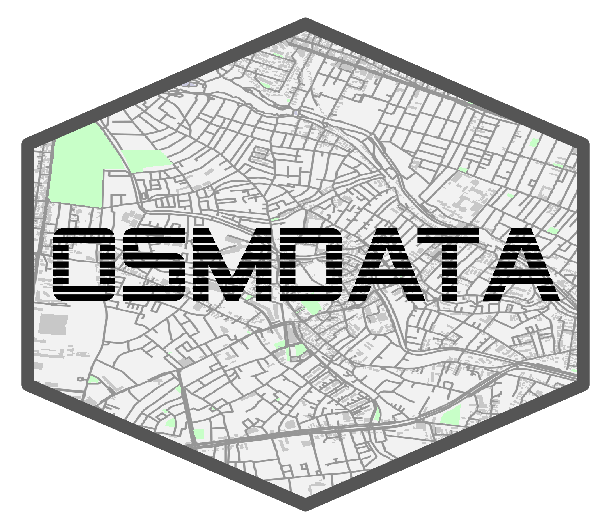

osmdata 
osmdata is an R package for accessing the data underlying OpenStreetMap (OSM), delivered via the Overpass API. (Other packages such as OpenStreetMap can be used to download raster tiles based on OSM data.) Overpass is a read-only API that extracts custom selected parts of OSM data. Data can be returned in a variety of formats, including as Simple Features (sf), Spatial (sp), or Silicate (sc) objects. The package is designed to allow access to small-to-medium-sized OSM datasets (see geofabrik for an approach for reading-in bulk OSM data extracts).
Installation
To install latest CRAN version:
install.packages("osmdata")Alternatively, install the development version with any one of the following options:
# install.packages("remotes")
remotes::install_git("https://git.sr.ht/~mpadge/osmdata")
remotes::install_bitbucket("mpadge/osmdata")
remotes::install_gitlab("mpadge/osmdata")
remotes::install_github("ropensci/osmdata")To load the package and check the version:
library(osmdata)
#> Data (c) OpenStreetMap contributors, ODbL 1.0. https://www.openstreetmap.org/copyright
packageVersion("osmdata")
#> [1] '0.1.4.34'Usage
Overpass API queries can be built from a base query constructed with opq followed by add_osm_feature. The corresponding OSM objects are then downloaded and converted to Simple Feature (sf) objects with osmdata_sf(), Spatial (sp) objects with osmdata_sp() or Silicate (sc) objects with osmdata_sc(). For example,
x <- opq(bbox = c(-0.27, 51.47, -0.20, 51.50)) %>% # Chiswick Eyot in London, U.K.
add_osm_feature(key = 'name', value = "Thames", value_exact = FALSE) %>%
osmdata_sf()
x#> Object of class 'osmdata' with:
#> $bbox : 51.47,-0.27,51.5,-0.2
#> $overpass_call : The call submitted to the overpass API
#> $meta : metadata including timestamp and version numbers
#> $osm_points : 'sf' Simple Features Collection with 24548 points
#> $osm_lines : 'sf' Simple Features Collection with 2219 linestrings
#> $osm_polygons : 'sf' Simple Features Collection with 33 polygons
#> $osm_multilines : 'sf' Simple Features Collection with 6 multilinestrings
#> $osm_multipolygons : 'sf' Simple Features Collection with 3 multipolygonsOSM data can also be downloaded in OSM XML format with osmdata_xml() and saved for use with other software.
osmdata_xml(q1, "data.osm")Bounding Boxes
All osmdata queries begin with a bounding box defining the area of the query. The getbb() function can be used to extract bounding boxes for specified place names.
getbb ("astana kazakhstan")
#> min max
#> x 71.22444 71.78519
#> y 51.00068 51.35111The next step is to convert that to an overpass query object with the opq() function:
It is also possible to use bounding polygons rather than rectangular boxes:
Features
The next step is to define features of interest using the add_osm_feature() function. This function accepts key and value parameters specifying desired features in the OSM key-vale schema. Multiple add_osm_feature() calls may be combined as illustrated below, with the result being a logical AND operation, thus returning all amenities that are labelled both as restaurants and also as pubs:
q <- opq ("portsmouth usa") %>%
add_osm_feature(key = "amenity", value = "restaurant") %>%
add_osm_feature(key = "amenity", value = "pub") # There are none of these(Logical OR combinations are demonstrated below.) Negation can also be specified by pre-pending an exclamation mark so that the following requests all amenities that are NOT labelled as restaurants and that are not labelled as pubs:
q <- opq ("portsmouth usa") %>%
add_osm_feature(key = "amenity", value = "!restaurant") %>%
add_osm_feature(key = "amenity", value = "!pub") # There are a lot of theseAdditional arguments allow for more refined matching, such as the following request for all pubs with “irish” in the name:
q <- opq ("washington dc") %>%
add_osm_feature(key = "amenity", value = "pub") %>%
add_osm_feature(key = "name", value = "irish",
value_exact = FALSE, match_case = FALSE)See ?available_features and ?available_tags for further information.
Data Formats
An overpass query constructed with the opq() and add_osm_feature() functions is then sent to the overpass server to request data. These data may be returned in a variety of formats, currently including:
- XML data (downloaded locally) via
osmdata_xml(); -
Simple Features (sf) format via
osmdata_sf(); -
R Spatial (sp) format via
osmdata_sp(); and -
Silicate (SC) format via
osmdata_sc().
Additional Functionality
Logical OR combinations can be implemented with the package’s internal c method, so that the above example can be extended to all amenities that are either restaurants OR pubs with
pubs <- opq ("portsmouth usa") %>%
add_osm_feature(key = "amenity", value = "pub") %>%
osmdata_sf()
restaurants <- opq ("portsmouth usa") %>%
add_osm_feature(key = "amenity", value = "restaurant") %>%
osmdata_sf()
c (pubs, restaurants)#> Object of class 'osmdata' with:
#> $bbox : 43.0135509,-70.8229994,43.0996118,-70.7279298
#> $overpass_call : The call submitted to the overpass API
#> $meta : metadata including timestamp and version numbers
#> $osm_points : 'sf' Simple Features Collection with 325 points
#> $osm_lines : NULL
#> $osm_polygons : 'sf' Simple Features Collection with 24 polygons
#> $osm_multilines : NULL
#> $osm_multipolygons : NULLData may also be trimmed to within a defined polygonal shape with the trim_osmdata() function. Full package functionality is described on the website
Citation
citation ("osmdata")
#>
#> To cite osmdata in publications use:
#>
#> Mark Padgham, Bob Rudis, Robin Lovelace, Maëlle Salmon (2017).
#> osmdata Journal of Open Source Software, 2(14). URL
#> https://doi.org/10.21105/joss.00305
#>
#> A BibTeX entry for LaTeX users is
#>
#> @Article{,
#> title = {osmdata},
#> author = {Mark Padgham and Bob Rudis and Robin Lovelace and Maëlle Salmon},
#> journal = {The Journal of Open Source Software},
#> year = {2017},
#> volume = {2},
#> number = {14},
#> month = {jun},
#> publisher = {The Open Journal},
#> url = {https://doi.org/10.21105/joss.00305},
#> doi = {10.21105/joss.00305},
#> }Data licensing
All data that you access using osmdata is licensed under OpenStreetMap’s license, the Open Database Licence. Any derived data and products must also carry the same licence. You should make sure you understand that licence before publishing any derived datasets.
Code of Conduct
Please note that this project is released with a Contributor Code of Conduct. By participating in this project you agree to abide by its terms.
Contributors
All contributions to this project are gratefully acknowledged using the allcontributors package following the all-contributors specification. Contributions of any kind are welcome!